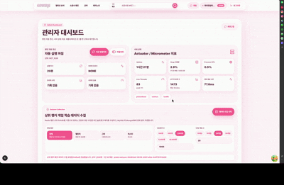
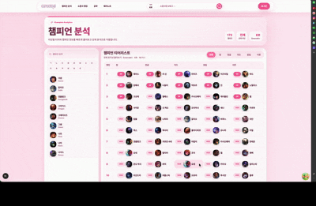
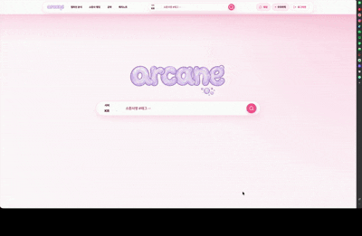
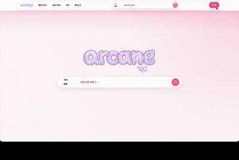
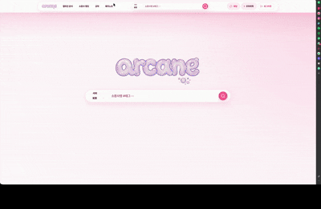
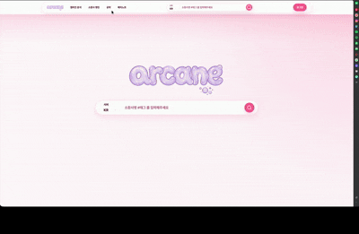
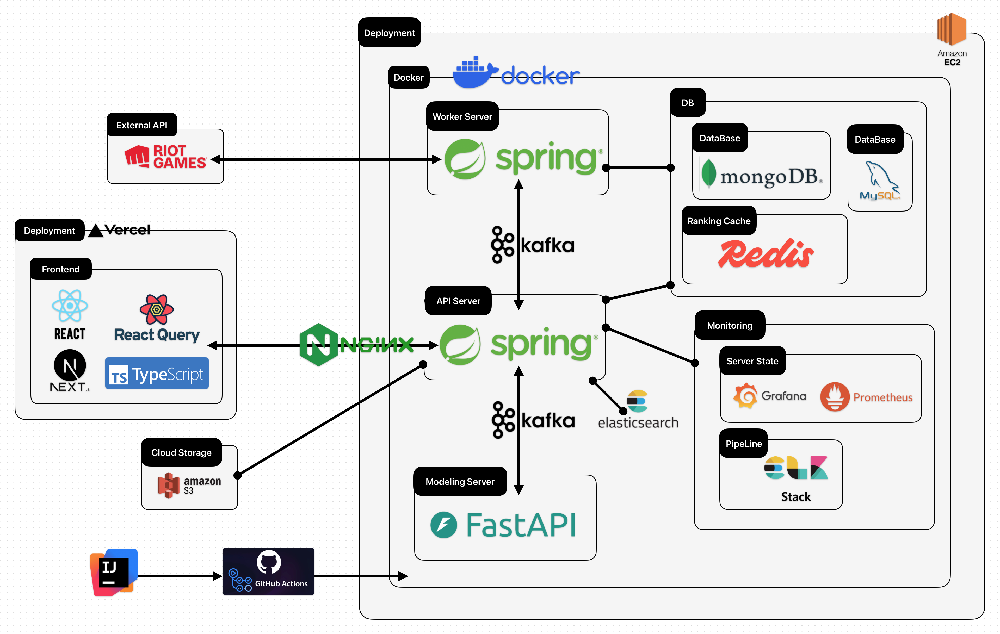
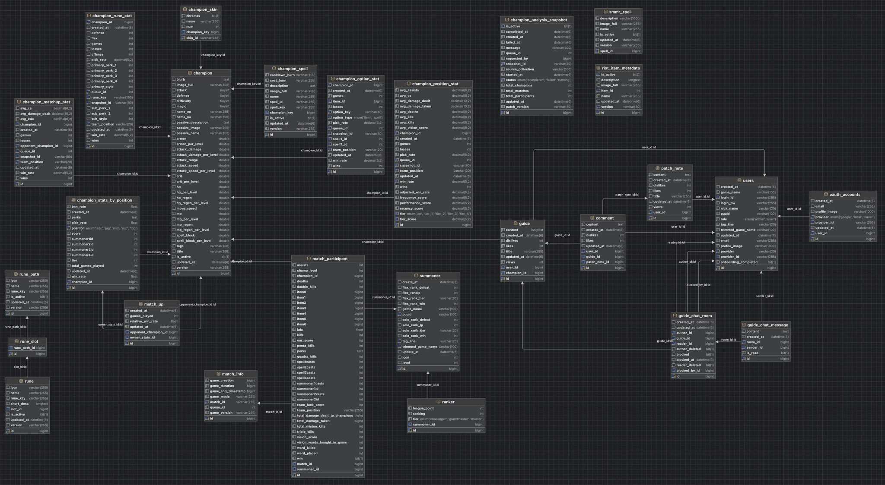

개요
Riot Games의 League Of Legend (이하 LOL) 전적 검색 및 게임 정보 분석 페이지입니다.
Riot에서 제공하는 API를 통해서 정보를 받고 효율적으로 데이터를 서빙하고 해당 데이터를 분석하여 더 효과적인 데이터로 가공하여 이용자들에게 효과적인 데이터를 제공하는 페이지입니다.
전적 검색 뿐 아니라 Riot 홈페이지에서 제공하는 데이터를 크롤링을 통해 정리을 제공합니다.
또한 챔피언의 공략 글을 작성하는 게시판 기능을 만들고 작성자와 직접 채팅 시스템을 통해 직접 소통할 수 있습니다.
프로젝트 기능 및 시연






관리자 페이지
현재 서버의 자원 상황 및 로그들을 모니터링할 수 있으며 랭킹 갱신 및 게임 관련 데이터들의 수집을 위한 관리자 대시보드입니다. 추가로 오래 걸리는 작업의 경우, 진행 프로세스를 실시간으로 파악할 수 있습니다.
챔피언 분석
상위 티어 랭커들의 게임 데이터를 통해서 챔피언 별로 RFM 분석을 통해 챔피언 별로 라인 별 OP / 1티어 / 2티어 / 3티어 / 4티어 / 5티어로 나눴습니다. 이를 사용자의 UX를 고려하여 페이지에서 전체, 라인 별로 나열하여 볼 수 있게 페이지를 구성하였습니다.
챔피언 별 상세 분석
챔피언 별로 상세 분석 페이지를 통해서, 해당 챔피언의 라인 별 승률, 픽률 등의 게임 데이터를 나타내고, 아이템 및 소환사 주문 그리고 가장 많이 적용하는 룬 정보에 대한 통계를 나타냅니다. 해당 챔피언이 Riot에서 상/하향 조정을 당한 내역을 크롤링을 통해서 확인할 수 있습니다. 또한 사람들이 해당 챔피언에 대해 올린 공략에 게시판 처럼 확인할 수 있습니다.
전적 검색
사용자가 게임 이름과 태그라인을 통해 전적을 검색하게 되면 해당 소환사의 최근 20게임에 대한 정보, 숙련도 및 검색된 전적의 승률 및 소환사가 참여한 라인에 대한 통계를 보여줍니다. 또한 전적에 대한 상세 검색을 통해서 해당 참여자의 실제 게임 지표를 이용하여 AI 점수를 산출하는 회귀 모델을 사용하여 해당 전적에 대략적인 수치를 나타낼 수 있습니다. 마지막으로 참여자의 게임 흐름을 이벤트 별로 쪼개어 나타냅니다.
회원가입
사용자는 공략글 작성 및 댓글 작성, 채팅 기능을 사용하기 위해서는 로그인이 필수적으로 요구됩니다. 구글과 네이버의 OAuth를 통해 쉽게 회원가입이 가능합니다. 사용자는 홈페이지에서 사용할 닉네임을 서버에서 랜덤으로 제공하는 것 혹은 자신이 직접 작성하는 것으로 설정할 수 있으며 이는 중복 체크를 통해 동일한 이름 설정을 방지하여 회원가입할 수 있습니다.
공략 가이드 및 채팅 시스템
사용자는 Markdown Editor를 통해, 챔피언에 해당하는 공략을 작성할 수 있습니다. 원하는 아이템의 이미지를 검색하여 추가할 수도 있습니다.
또한 사용자는 공략을 쓴 작성자에게 직접 실시간 채팅으로 추가적인 질문을 구체적으로 할 수 있습니다.
패치노트 정리
League Of Legend라는 게임은 자주 패치를 통해 챔피언들의 밸런스를 조정합니다. 라이엇의 원본 패치노트를 인용하여 패치 노트를 정리하고 챔피언 별로 지금까지 어떤 패치노트가 적용되었는지 구분하여 확인할 수 있습니다.
랭킹 시스템
Challenger, GrandMaster, Mater 티어의 유저들의 순위와 승률, 점수를 랭킹 순으로 볼 수 있습니다.
해당 랭킹은 자동으로 30분마다 업데이트 됩니다.
역할
- 백엔드 전반적인 아키텍처 설계
- 단일 서버 구조를 MSA 기반 구조로 분리
- 대용량 Riot 데이터 수집 파이프라인 구축
- 챔피언 분석 시스템 구현
- AI 점수 계산 서버 연동 및 점수 계산 회귀 모델 작성
- WebSocket/STOMP 기반 실시간 채팅 시스템 개선
- ElasticSearch 기반 검색 성능 개선 설계 및 적용
- 모니터링 구조를 포함한 운영 인프라 구성
시스템 아키텍처

ERD

개선 사항
단일 서버에서 장시간 작업을 함께 처리하며 발생한 API 응답 지연
상황 1Arcane 서버는 일반 API 응답뿐 아니라 Riot API 기반 랭킹 업데이트, Match 데이터 수집, 챔피언 통계 분석, AI 점수 계산 요청까지 함께 처리했습니다. 장시간 작업이 DB 커넥션 풀, CPU, 메모리, 네트워크 I/O를 사용자 요청과 공유하면서 전적 검색 API는 평균 약 13.6초, p95 약 35.5초까지 증가했습니다.
API Server, Worker Server, AI Server를 분리했습니다. API Server는 사용자 요청과 Kafka 작업 요청 발행에 집중하고, Worker Server는 랭킹 업데이트, 데이터 수집, 챔피언 분석을 담당하도록 분리했습니다. AI Server는 모델 추론 역할만 담당하도록 나눴습니다.
이를 통해 사용자-facing API가 장시간 배치 작업을 직접 수행하지 않게 되었고, 랭킹 업데이트나 데이터 분석은 Kafka jobId 기반 비동기 작업으로 처리되도록 개선했습니다.
HTTP 기반 서버 간 호출로 인한 MSA 효과 제한
상황 2API Server, Worker Server, AI Server로 나누더라도 모든 작업을 HTTP로 직접 호출하면 요청을 보낸 서버가 응답을 기다려야 했습니다. 수십 초 이상 걸리는 작업은 timeout, 재시도, 장애 전파 문제로 이어질 수 있었습니다.
Kafka를 도입해 API Server는 작업 요청 이벤트만 발행하고, Worker Server가 Consumer로 메시지를 소비해 실제 작업을 수행하도록 변경했습니다. 작업 완료/실패도 Kafka 이벤트로 API Server에 전달해 관리자 페이지에서 상태를 확인할 수 있도록 구성했습니다.
| count | 기존 HTTP 순차 | Kafka 배치 | 개선율 |
|---|---|---|---|
| 10 | 737ms | 92ms | 87.52% |
| 50 | 2,239ms | 83ms | 96.29% |
| 100 | 4,332ms | 88ms | 97.97% |
| 200 | 8,360ms | 116ms | 98.61% |
Riot 패치 변경에 따른 하드코딩 데이터 관리 한계
상황 3Data Dragon 버전이나 이미지 URL 일부가 하드코딩되어 있어 신규 챔피언이 추가되거나 패치 버전이 바뀌면 이미지가 깨지거나 잘못된 메타데이터를 참조할 수 있었습니다. 실제로 잘못된 Data Dragon 버전 16.11.782.9736 사용으로 Riot CDN 403 문제가 발생했습니다.
Data Dragon의 최신 버전을 조회하고 챔피언/아이템/룬 메타데이터에 version, isActive를 저장하는 구조로 개선했습니다. Worker Server에 game-data-sync Kafka 작업을 추가하고, 프론트 이미지 URL은 API에서 내려준 version을 우선 사용하도록 변경했습니다.
대량 Match 데이터 분석을 위한 Raw Data 저장 구조 부재
상황 4Riot Match 데이터는 한 게임에 10명의 참가자가 포함되고, 참가자마다 챔피언, 포지션, 아이템, 스펠, 룬, 승패, KDA, 피해량 등 복잡한 정보가 포함됩니다. 이를 매번 Riot API에서 다시 조회하거나 관계형 테이블에만 강하게 정규화하면 재분석과 확장에 불리했습니다.
MongoDB에 Match Participant 단위 Raw Data를 저장하도록 설계했습니다. Worker Server는 상위 랭커의 PUUID를 기준으로 최근 게임의 MatchId를 수집하고, 중복 MatchId를 제거한 뒤 Match 상세 정보를 MongoDB와 MySQL에 저장합니다.
실제 데이터 수집 로그 기준, 한 번의 수집 작업에서 9,784개 unique matchId를 처리했고 MongoDB에 70,910건의 participant raw data를 저장했습니다.
챔피언 통계 조회 시 반복 계산으로 인한 응답 지연
상황 5챔피언 티어 리스트와 상세 통계는 자주 조회되지만 초 단위 실시간성이 필요한 데이터는 아닙니다. 기존 /statistics/* 계열 API는 요청 시점에 데이터를 조회하고 계산하는 흐름에 가까워 약 5초~9초 수준의 응답 시간이 발생했습니다.
MongoDB에 저장된 Match Participant Raw Data를 Worker Server가 사전 분석하고, 챔피언별 승률, 픽률, 포지션별 통계, 아이템 사용률, 소환사 주문 사용률, 룬 통계를 MySQL 분석 테이블에 저장하도록 변경했습니다.
프론트는 /analysis/* API를 통해 미리 계산된 결과만 조회하게 되었고, 챔피언 분석 API 응답은 약 93% 감소한 평균 약 0.6초~0.8초 수준으로 단축되었습니다.
LIKE 기반 검색의 한계와 Elasticsearch 개선
상황 6소환사 자동완성과 공략글 검색은 모두 MySQL의 LIKE %keyword% 방식에 의존했습니다. 검색창 입력처럼 반복 호출되는 기능에서는 DB 부하가 누적되고, Markdown 기반 LONGTEXT 본문 검색은 데이터가 늘수록 확장성이 떨어졌습니다.
소환사 검색은 gameName, tagLine, riotId를 Elasticsearch에 색인하고 n-gram 기반 자동완성 검색이 가능하도록 구성했습니다. 공략글 검색은 title, content, championNameKo, championNameEn, authorName을 arcane_guide_posts 인덱스에 색인했습니다.
검색은 Elasticsearch가 담당하고, 정합성이 필요한 상세 데이터 조회는 MySQL이 담당하는 구조로 분리했습니다.
| 검색어 | DB LIKE 평균 | Elasticsearch 평균 | 개선율 |
|---|---|---|---|
| hide on bush#kr | 27ms | 15ms | 44.44% |
| hide | 31ms | 10ms | 67.74% |
| a | 48ms | 9ms | 81.25% |
| 방식 | 평균 응답 시간 |
|---|---|
| MySQL LIKE 검색 | 4.005ms |
| Elasticsearch 검색 | 0.960ms |
| ES 결과 기반 MySQL 상세 조회 | 0.107ms |
| Elasticsearch 경로 합산 | 1.067ms |
운영 모니터링 도구 부재와 MSA 로그 추적 어려움
상황 7API Server, Worker Server, Kafka, Redis, MongoDB, MySQL이 함께 동작하면서 장애 원인을 단순 콘솔 로그만으로 찾기 어려웠습니다. Riot API 401/504, Kafka broker 연결 실패, MongoDB codec 오류, Data Dragon 이미지 403 등 장애 종류도 다양했습니다.
API Server와 Worker Server의 로그 형식을 통일하고 serverType, task, method, status, traceId, jobId를 포함하도록 개선했습니다. 로그를 시간 단위 파일로 저장하고 관리자 페이지에서 API/Worker 로그를 조회할 수 있도록 구성했습니다.
Prometheus/Grafana로 JVM heap, CPU, HTTP 요청 수, 최대 응답 시간, thread 수를 확인할 수 있게 했고, ELK 스택을 통해 로그를 구조화하여 검색할 수 있는 운영 기반을 마련했습니다.
랭킹 업데이트의 API 요청 문제 및 안정성 부족
상황 8랭킹 데이터는 Riot API 호출량이 많고 업데이트 시간이 긴 데이터입니다. 사용자가 랭킹 페이지에 접근할 때마다 Riot API나 DB를 직접 조회하면 응답 지연과 Rate Limit 문제가 발생할 수 있고, 업데이트 중 기존 캐시를 덮어 쓰면 불완전한 데이터가 노출될 수 있습니다.
Worker Server가 Riot API로 Challenger 300명, Grandmaster 700명 등 랭킹 데이터를 수집한 뒤 Redis에 저장하도록 변경했습니다. 저장 시 임시 키에 먼저 데이터를 구성하고, 완료 후 실제 키로 교체하는 Atomic Swap 방식을 적용했습니다.
랭킹 조회 API는 Redis 캐시를 기준으로 빠르게 응답하고, 업데이트 중에도 기존 랭킹 데이터를 안정적으로 제공할 수 있도록 개선했습니다.